投机解码（speculative decoding）让vLLM在单次target model前向中验证多个draft token。实验中，它对输出token吞吐的影响随drafting方法和proposal长度而变化，同时也取决于模型系列、draft checkpoint、workload与接受行为。
LLM（大语言模型）支持广泛的应用，但大规模服务需要精细优化。标准自回归解码是多数LLM服务系统采用的基线：模型生成一个token，将其追加到序列，再用更新后的序列生成下一个token。该过程简单可靠，但由于输出token必须严格按从左到右的顺序产生，服务循环每次仍只推进一个已提交token。
投机解码（投机解码）[1] 在此基线上引入draft-and-verify机制。轻量级draft组件提出候选未来token，target model在候选被提交前对其验证。当多个draft token被接受时，系统可在单次target-model验证步骤中提交多个输出token，同时保持target model的输出行为不变。
以下说明投机解码在vLLM中的工作方式，并给出测试环境中的测量结果。先回顾自回归解码基线与draft-and-verify流程，再考察五种投机drafting方法：native MTP、Gemma 4 MTP、EAGLE-3、DFlash和DSpark。这些方法的差异在于draft组件如何从target model获取信息，以及候选token是串行、自回归、并行还是混合方式生成。最后给出在本环境中启用所测方法的方式、基于ROCm™ 开放软件平台在AMD Instinct™ MI300X和MI355X GPU上的实验测量结果，并讨论实际调优与可观测性方面的注意事项。
在标准的自回归解码中，每个decode step产生并提交一个新token。例如，生成四个输出token需要四个顺序执行的decode step：
每一步之后，生成的token会追加到序列中，并成为下一步输入的一部分。这使解码循环简单直接，但也要求每个输出token都对应一次模型decode step。在长序列生成过程中，这种逐token循环会成为延迟的主要来源，并限制服务吞吐。
因此，投机解码背后的关键问题是：
能否在保持原始模型输出行为不变的同时，减少每次只推进一个token的生成次数？
投机解码通过将提案与验证分离来解决这一问题。draft组件先提出若干候选的未来token。原始模型作为target model，随后在这些候选token被提交前对其进行验证。
投机解码不会替换原始模型。它将原始模型保留为target model，由后者负责最终输出，并在其前面加入一个更快的proposal阶段。
该过程包含两部分：
Draft：提出若干个候选的未来token。
Verify：使用target model校验这些候选。
在每轮 投机解码 中（见下图），一个轻量的draft组件提出一个或多个未来token。这些token仅为候选，不会被立即提交。随后target model在一次验证pass中评估候选token序列。
验证从左到右进行。每个draft token使用target model在对应位置的结果进行校验。被接受的token提交到输出序列。当某个draft token被拒绝时，同一提案中后续的候选不再被接受。
如果某个draft token被拒绝，则由target model给出下一个token。其余draft token被丢弃，生成从更新后的序列继续。
从概念上讲，标准自回归解码的推进方式如下：

投机解码则允许多个候选位置被一并评估：

当多个候选被接受时，这可以减少target model的解码轮数。当draft组件产生的token被target model接受时，一次target model验证步骤即可提交多个输出token。当某个提案被拒绝时，由target侧的结果决定生成如何继续。

下图给出了一个投机解码轮次的示例。绿色框是验证通过的draft token，红色框标记第一个被拒绝的draft token，灰色框是随后被丢弃的draft token。输出中的蓝色token来自target model，而非draft提议。

假设当前prompt为：
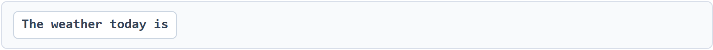
draft组件提议若干未来token：
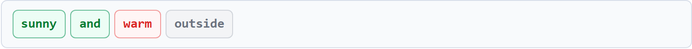
target model从左到右验证draft token：

前两个draft token sunny和and被接受。在第三个位置，draft提议warm，但target model选择clear。其余候选outside因位于第一个被拒绝位置之后而被丢弃。
因此，下一轮解码从以下内容继续：

所有 投机解码方法遵循相同的整体draft-and-verify流程，但在draft组件的设计方式及其与target model的协作方式上存在差异。
主要差异在于：
从target model获取的信息类型。
这些信息如何融入drafting过程。
候选token是按顺序生成还是并行生成。
基于这些差异，可将drafting方法归为三大类：native MTP模块、独立MTP drafter、专用的target-conditioned draft网络。
Native MTP模块：直接内建于target模型架构中；使用模型原生的辅助预测路径；按顺序生成候选token。
独立MTP drafter：使用与特定target模型配对的独立checkpoint；推理时使用target模型的激活值和共享的KV cache信息；按顺序生成候选token。
专用的target-conditioned draft网络：使用针对特定target模型训练的独立speculator模型，包括EAGLE-3、DFlash和DSpark。EAGLE-3基于target模型的hidden states自回归地draft，DFlash基于target模型的hidden states并行draft块，DSpark则增加轻量的因果校正和基于置信度的前缀选择。
这些分类描述的是draft组件的架构，而非target模型系列。一个target模型可以支持native MTP，同时也可拥有单独训练的EAGLE-3、DFlash或DSpark draft模型。
draft组件并非完全独立运行。根据方法不同，draft组件可能接收：
来自target模型的hidden representation。
来自若干选定target层的hidden states。
target模型的KV cache。
由多个target模型表示组合生成的特征。
以下各节说明每种方法如何使用这些信息，以及如何生成候选token。
Multi-Token Prediction（多token预测），即MTP，指一类模型原生机制，用于预测紧邻下一个token之后的token。在vLLM中，当target模型包含兼容的辅助预测组件时，即可使用原生MTP[2]。MTP的具体架构因模型系列而异，但每种实现都提供一条辅助路径来提议未来的token。
在第一个投机步骤中，MTP组件将target模型的隐藏表示与当前token的信息结合，预测出第一个draft token。在后续步骤中，新生成的draft token与上一步MTP产生的隐藏状态用于预测下一个候选token。提议出配置数量的候选token后，target模型在一次验证中统一评估它们。
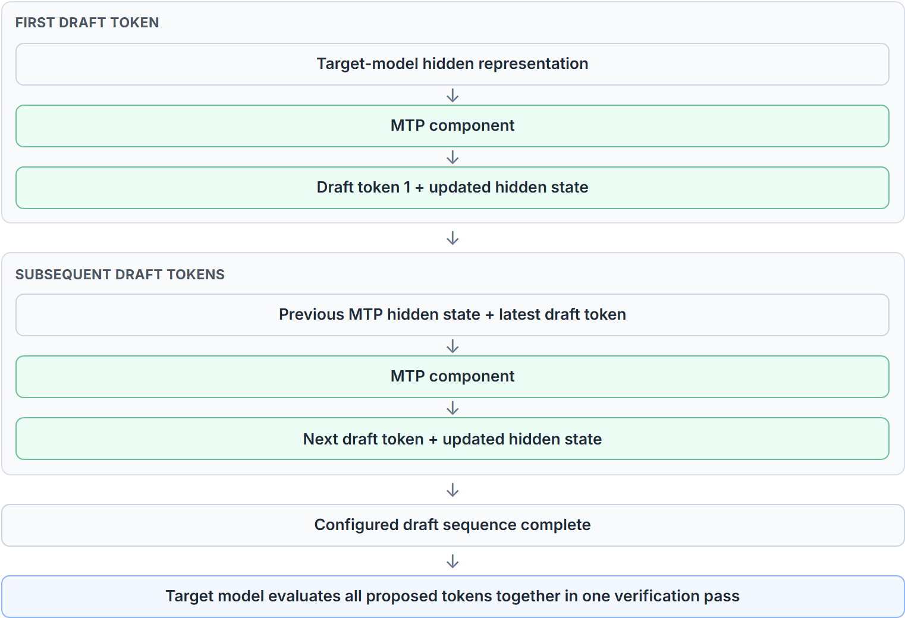
许多原生MTP实现遵循相似的模式。来自target模型或上一步MTP预测的隐藏表示，与偏移输入token或最新draft token的embedding相结合：

这两个输入承担不同职责：(1) hidden representation携带前序序列的信息；(2) token embedding标识draft继续生成的最后一个token。在常见实现中，二者沿hidden维度拼接，经过变换后进入辅助预测层。
物理MTP层数与配置的投机长度是两个独立概念。当num_speculative_tokens超过checkpoint直接提供的预测深度时，vLLM可以通过额外的forward pass复用MTP路径。因此取值更大意味着在验证前提出更多候选，但也会引入更多串行draft工作。
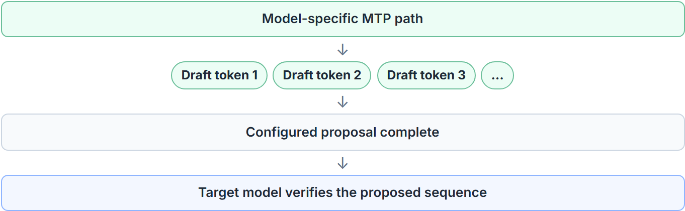
原生MTP与target model架构紧密绑定。在许多实现中，MTP路径的部分组件与target model共享，这使额外的显存开销相对可控。但生成多个speculative token仍需在验证前串行draft。
Gemma 4使用单独打包的MTP draft组件，与特定target model配对 [3]。该draft组件虽有独立checkpoint，但在推理过程中仍与target model紧密连接。
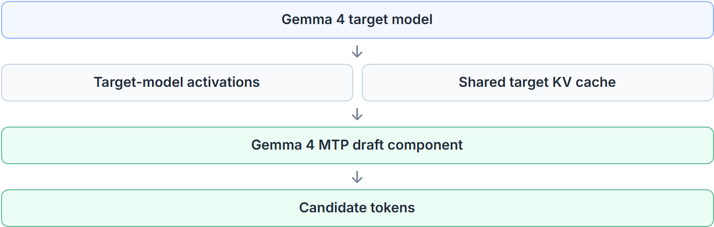
draft组件使用target model产生的activation，并共享target model的KV cache。由此可复用target已计算好的上下文信息，无需独立处理已接受的prefix。
与native MTP相同，draft组件的层数与配置的speculative length相互独立。当请求多个候选token时，draft组件按顺序依次生成：

EAGLE-3使用针对特定target model训练的专用draft网络。draft组件拥有自身的执行路径，但仍紧密依赖于target model产生的信息作为条件 [4]。
在target model前向传播过程中，EAGLE-3记录target Transformer三个阶段的hidden states：接近开头、中间附近和接近结尾。它们是同一accepted sequence在target model不同处理阶段上的上下文表示。
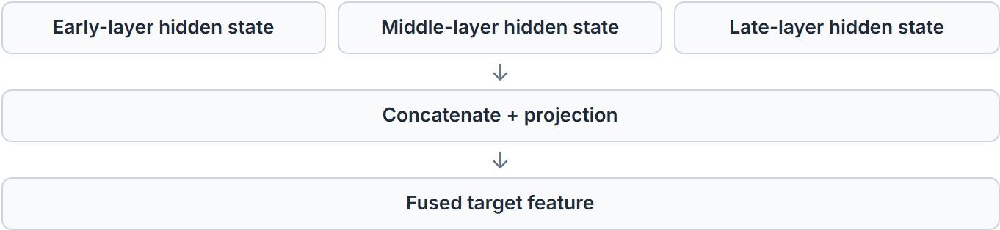
三个hidden states被拼接并投影为单一的fused target feature。该融合表示随后与采样所得token的embedding结合，再进入EAGLE-3 draft decoder。
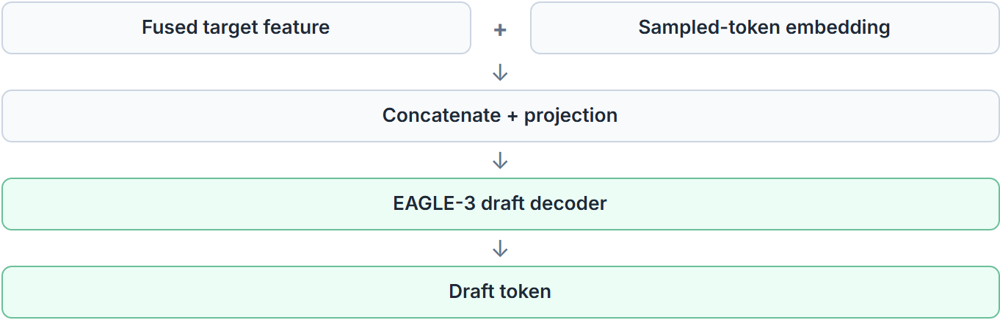
这两类输入承担不同的作用：
融合后的target特征利用target model前向传播中多个阶段的信息，对已接受的序列进行汇总。
采样得到的token embedding标识出drafting继续的起始token。
EAGLE-3以自回归方式生成draft token。对于第一个draft token，它使用由已接受序列计算得到的融合target特征，并结合采样token的embedding。生成一个draft token后，其embedding被送入下一个drafting阶段。
由于target model尚未处理后续的投机位置，这些位置上的target model隐状态不可用。因此EAGLE-3在延续draft序列时使用前一个draft组件的输出。

这种顺序反馈使后续draft token直接依赖于所提议序列中更早的drafted token。然而，生成更多投机token也意味着在验证之前需要更多顺序drafting工作。
DFlash使用为特定target模型训练的专用draft网络。与顺序生成候选token的MTP和EAGLE-3不同，DFlash并行预测整个未来位置块 [5]。
DFlash以anchor token开始每个draft block。anchor是由target模型生成或确认的已知token，因此DFlash无需预测它。它只是为后续被掩码的位置提供一个已知的起始点。在后续解码轮次中，这通常是上一轮验证过程返回的额外target token。
anchor占据block的第一个位置，其余位置被掩码并并行预测：
draft block以已确认的anchor token开始，后跟被掩码的位置：
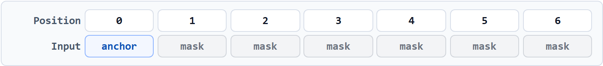
其中，anchor是已知的target-model token，而被mask的位置由DFlash预测。
单次DFlash前向传播即可同时预测所有被mask的位置：

与EAGLE-3相同，DFlash首先将target model多个层的hidden states融合为一个表示。
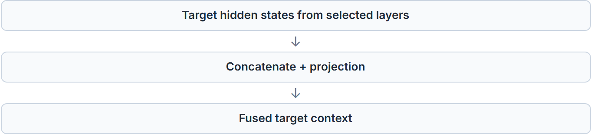
主要区别在于该融合表示的使用方式。EAGLE-3在自回归draft network的输入端将其与采样token的embedding拼接。DFlash则把融合后的target上下文转换为额外的Key和Value表示，供draft network的每一层使用。
因此，来自被mask的draft位置的Query可以同时关注：

由target model导出的Key和Value表示。
Key和Value表示由draft block自身产生。
因此target model的上下文在整个draft network中始终可用，而不是仅在其输入端注入一次。
draft block生成后，target model在一次验证pass中评估所有候选token。接受判定按从左到右的顺序应用：token依次被接受并提交，直到出现第一次拒绝，其余候选全部丢弃。
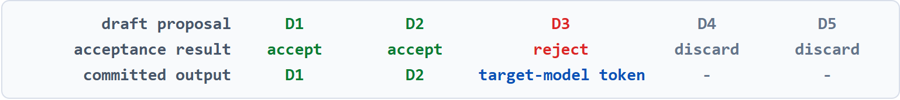
此时，target model的token替换第一个被拒绝的draft token，其余draft token被丢弃。
DFlash的一个典型特征是：所有masked位置在一次draft-network前向传播中一并预测。
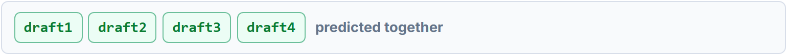
这与串行draft不同：

由于所有被mask的位置是一次性共同预测的，同一次前向中靠后的位置并不以靠前位置的采样输出为条件。这移除了自回归draft所使用的逐token反馈。因此，靠后位置的有效性取决于训练好的checkpoint与具体workload，在使用更长的draft block时尤为如此。
DSpark在并行draft基础上扩展了两个额外机制：
一个轻量级sequential head，在draft block内引入token之间的依赖关系。
基于置信度选择提交给target model验证的前缀。
DSpark使用改造后的DFlash模型作为其并行backbone [6]。该backbone在一次forward pass中为所有位置执行主要的draft计算，为每个draft位置生成一个hidden state和一组base logits。因此它继承了DFlash一节所述的target-context conditioning。
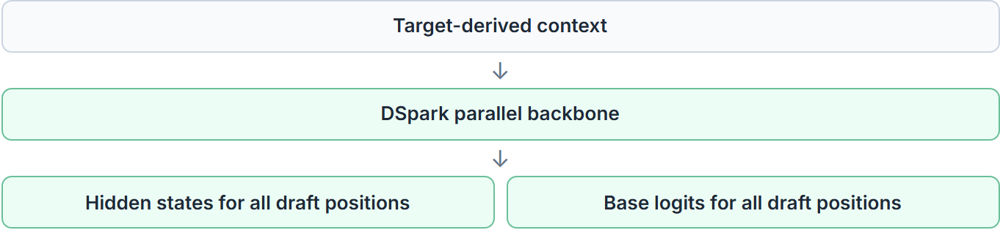
完全并行的draft组件在预测每个位置时，不会先看到同一block中更早位置已选出的token。当存在多种合理续写时，这会产生不一致的组合。例如，"of course" 和 "no problem" 都可能合理，但独立地按位置预测可能产生 "of problem."
DSpark在并行backbone之后接一个轻量级sequential head来解决这一问题。backbone仍然一次性计算所有位置的base logits。sequential head随后从左到右选择token，利用此前已选出的draft token信息调整每个位置。
DSpark采用轻量级Markov head，在已选出的draft token之间引入依赖关系。对每个位置，Markov head使用紧邻其前一个已选token产生一个小bias。该bias用于调整并行backbone输出的base logits：
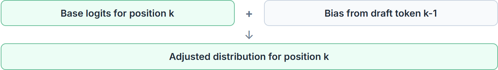
主draft网络在一次forward pass中同时处理所有候选位置。之后，仅由轻量级Markov head从左到右运行，利用此前已选出的draft token调整每个位置。
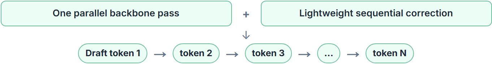
由此，同一block内后续的draft token可以依赖于已经选出的token，而无需为每个位置重新运行完整的draft网络。
DSpark的设计还包含一个confidence head（置信度头），可为target model的验证选择更短的draft prefix。该功能在本次实验所用的vLLM路径中未启用，因此基准测试结果只反映并行draft network与轻量级Markov校正。
target model在一次verification pass中评估提议序列，draft token从左到右依次提交，直到出现首次拒绝。
下图以并排视图直观呈现五种drafting方法：draft组件长什么样、使用哪些target model信息，以及候选token是串行还是并行生成。图下方的表格以紧凑形式重述同一对比。在这五种方法中，target model仍以一次verification pass评估提议序列，接受判定从左到右依次应用，直到第一个被拒绝的draft token。
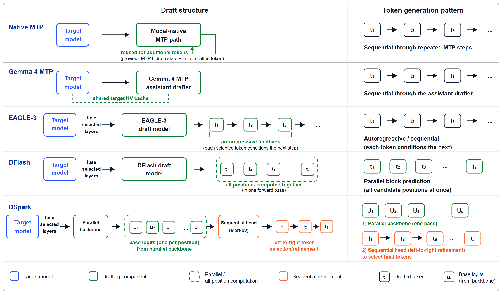
| 方法 | draft组件 | 使用的目标模型信息 | draft token如何生成 |
|---|---|---|---|
| Native MTP | 模型原生的辅助MTP路径 | 目标模型或先前MTP的隐藏表示，与当前draft token信息结合 | 通过重复使用MTP路径顺序生成 |
| Gemma 4 MTP | 与目标模型配对的独立MTP draft组件 | 目标模型激活值和共享的目标KV cache | 通过配对的MTP组件顺序生成 |
| EAGLE-3 | 专用自回归draft网络 | 在目标模型前向传播的开头附近、中间附近和结尾附近捕获的隐藏状态，融合为一个表示 | 顺序生成，每个draft token都会影响下一个 |
| DFlash | 专用并行draft网络 | 融合后的目标模型隐藏状态作为额外的Key和Value信息提供给每个draft层 | 所有候选位置在一次并行前向传播中一起预测 |
| DSpark | DFlash风格的并行draft网络，带轻量级Markov head | 并行draft网络使用的相同目标条件信息 | 一次并行前向传播，随后对token选择进行轻量级顺序调整 |
在vLLM中，投机解码（投机解码）通过 --speculative-config配置。主要差异在于method名称、是否需要单独的draft checkpoint，以及请求的候选token数量。当前vLLM支持mtp、eagle3、dflash和dspark作为method取值。
对于原生MTP，draft组件随target模型一同提供，因此省略model字段：
vllm serve <target-model> \
--speculative-config '{
"method": "mtp",
"num_speculative_tokens": <N>
}'对于Gemma 4 MTP、EAGLE-3、DFlash和DSpark，model字段通常指向针对target模型训练的checkpoint：
vllm serve <target-model> \
--speculative-config '{
"method": "<method>",
"model": "<matching-draft-checkpoint>",
"num_speculative_tokens": <N>
}'Gemma 4 assistant checkpoint走MTP路径，尽管它们是通过model字段提供的。vLLM将assistant组件连接到target模型，并允许其共享target的KV cache。
启用某个方法前，请确认：
已安装的vLLM版本支持该方法与模型架构。
draft checkpoint与target模型及方法兼容。
num_speculative_tokens与该checkpoint兼容。
模型卡支持目标硬件与推理后端。
| 方法 | 独立draft checkpoint | 典型配置 |
|---|---|---|
| Native MTP | 否 | "method": "mtp" "num_speculative_tokens": |
| Gemma 4 MTP | 是 | "method": "mtp" "model": " |
| EAGLE-3 | 是 | "method": "eagle3" "model": " |
| DFlash | 是 | "method": "dflash" "model": " |
| DSpark | 是 | "method": "dspark" "model": " |
Native MTP不加载单独的draft checkpoint，并且可能与target model共享embedding table或output head等组件。Gemma 4 MTP、EAGLE-3、DFlash和DSpark会加载额外的draft权重，因此需要预留足够的GPU显存余量。实际开销取决于draft组件大小、数值精度、tensor-parallel配置以及运行时缓冲区。
目前已有多个组织在Hugging Face上发布预训练draft模型。Google为Gemma 4提供MTP assistant，Z-Lab维护了一系列DFlash checkpoint。Red Hat AI提供覆盖EAGLE-3、DFlash和DSpark的draft模型，DeepSeek的DeepSpec集合为这三种方法提供匹配的checkpoint。LightSeek专注于面向Kimi的基于EAGLE的draft模型，Inferact则发布面向MiniMax和Kimi的draft模型。
| draft模型发布方 | 方法 | 代表性模型与目标模型 |
|---|---|---|
| Gemma 4 MTP | 用于Gemma 4 E2B、E4B、12B、26B-A4B和31B目标模型的Assistant检查点。[7] | |
| LightSeek Foundation | EAGLE-3和EAGLE-3.1 | 用于Kimi-K2.5、Kimi-K2.6和Kimi-K2.7-Coder的基于EAGLE的draft模型，包括标准版和MLA变体。[8] |
| Red Hat AI | EAGLE-3、DFlash和DSpark | 涵盖Llama、Qwen、Gemma、GPT-OSS、GLM、Nemotron和Mistral等目标模型系列的集合。常见后缀包括 -speculator.eagle3、-speculator.dflash和 -speculator.dspark。[9] |
| Z-Lab | DFlash | 适用于Qwen3、Qwen3.5、Qwen3.6、Gemma 4、Kimi、MiniMax、GPT-OSS和Llama等目标的DFlash检查点。检查点名称通常遵循 |
| DeepSeek AI | EAGLE-3、DFlash和DSpark | DeepSpec集合为Qwen3-4B、Qwen3-8B和Qwen3-14B以及Gemma 4 12B提供了这三种方法的版本。示例包括eagle3_qwen3_8b_ttt7、dflash_qwen3_8b_block7和dspark_qwen3_8b_block7。[11] |
| Inferact | EAGLE-3和DSpark | draft模型，包括Inferact/MiniMax-M3-EAGLE3、其GQA变体以及Inferact/Kimi-K3-DSpark。[12] |
启用 投机解码 后，实际问题是额外的drafting工作能否提升端到端服务性能。候选token不必在每个位置都正确，因为target model会在提交前对其评估。因此性能取决于有多少候选token被接受，以及节省的target-model解码工作是否超过drafting与验证的成本。
我们使用基于任务的基准测试而非随机token序列来评估模型质量与服务性能。接受行为取决于实际模型输出的结构和可预测性，因此基于任务的prompt能更真实地反映实际性能。
主要性能指标如下：
输出token吞吐，以及相对非投机基线的加速比。
平均接受长度与draft token接受率（在可获取的情况下）。
相对非投机基线的模型质量。
实验覆盖五个投机起草（speculative drafting）方法，涉及多个target模型系列。对勾表示该target-方法组合已有基准测试结果；短横线表示该组合未纳入当前实验。
该表汇总了实验中包含的target-method组合，并展示了 投机解码在不同模型、负载和proposal长度下的表现。由于模型架构、激活参数量、draft组件规模、负载以及服务条件都会影响性能，每项结果应结合其测试配置来解读。
| 目标模型 | Native MTP | Gemma 4 MTP | EAGLE-3 | DFlash | DSpark |
|---|---|---|---|---|---|
| google/gemma-4-26B-A4B-it | - | ✓ Red Hat AI | ✓ Z-Lab | - | |
| google/gemma-4-31B-it | - | ✓ Red Hat AI | ✓ Z-Lab | ✓ Red Hat AI | |
| Qwen/Qwen3-8B | - | - | ✓ Red Hat AI | ✓ Z-Lab | ✓ DeepSeek |
| Qwen/Qwen3.5-27B | ✓ 内建 | - | - | ✓ Z-Lab | - |
| Qwen/Qwen3.5-122B-A10B | ✓ 内建 | - | - | ✓ Z-Lab | - |
| Qwen/Qwen3.6-27B | ✓ 内建 | - | - | ✓ Z-Lab | - |
| Qwen/Qwen3.6-35B-A3B | ✓ 内建 | - | - | ✓ Z-Lab | - |
| moonshotai/Kimi-K2.5 | - | - | ✓ LightSeek | ✓ Z-Lab | - |
| MiniMaxAI/MiniMax-M3-MXFP8 | - | - | ✓ Inferact | - | - |
吞吐方面，我们以标准自回归基线为参照测量每秒生成的token数，并扫描speculative token数量，以研究投机深度对端到端服务吞吐的影响。
测量结果随target模型、draft方法、负载和proposal长度而变化。
对于gemma-4-26B-A4B-it，在测试扫描范围内测得的最高吞吐比分别为：Gemma 4 MTP在GSM8K和MBPP上达到2.74× 和2.62×，DFlash在MATH500和HumanEval上达到2.87× 和2.79×。EAGLE-3在四个数据集上的测量结果为2.11× 至2.27×。
对于gemma-4-31B-it，Gemma 4 MTP在GSM8K上达到2.00×，在MBPP上达到1.99×；DFlash在MATH500上达到2.34×，在HumanEval上达到2.05×。EAGLE-3与DSpark在四个评测数据集上也均高于基线。与最大实测吞吐对应的proposal length随workload而变化。
对于Qwen3-8B，DSpark的结果从MATH500上的1.15× 到GSM8K上的1.63×。DFlash的结果范围为1.08× 至1.27×。EAGLE-3在GSM8K、HumanEval和MBPP上高于基线，而在MATH500上的最大实测值仍低于基线。
对于Qwen3.5-27B、Qwen3.5-122B-A10B和Qwen3.6-27B，在测试范围内测得的最大native-MTP值均高于对应的最大DFlash值。该组中最高倍率为Qwen3.5-122B-A10B在MATH500上的2.20×。与最大实测吞吐对应的native-MTP proposal length为N=4至N=7，取决于模型与数据集。
对于Qwen3.6-35B-A3B，DFlash的结果范围为1.77× 至2.06×，最大值在四个数据集上均出现在N=7。Native-MTP的结果范围为1.28× 至1.49×，最大值出现在N=6。与Qwen3.6-27B的结果差异表明，同一系列内不同模型的表现可能不同。
对于MiniMax-M3-MXFP8，EAGLE-3在N=4时于HumanEval上达到2.09×。对于Kimi-K2.5，EAGLE-3最高达到2.33×，DFlash最高达到2.68×。在测试范围内，EAGLE-3的最大值通常出现在N=4，而DFlash的最大值出现在N=7。
在各项实验中，与最大实测吞吐对应的proposal length并非常量。对于串行方法，吞吐通常随N的前几个取值上升后进入平台期。对于DFlash与DSpark，N=7常位于较高吞吐的设置之列，而更大的取值并未持续提升吞吐。
这些观察结果反映了本研究所使用的硬件、软件、target model、draft checkpoint、workload以及sweep设置。
投机解码 应被视为一种运行时优化，而非对所有workload都同样有效的固定设置。与最高吞吐对应的num_speculative_tokens取值取决于有多少proposed token被接受，以及所避免的target-model decode工作量是否超过drafting与verification的开销。
因此可观测性很重要。model-card推荐配置或示例配置可作为起点，但最终设置应基于代表性workload和端到端测量来确定。有用的信号包括吞吐、平均接受长度、整体接受率以及逐位置接受率。
更大的proposal window为系统提供了在一次verification pass中提交多个token的更多机会。然而，在较靠后的draft位置上接受率可能下降。此时，额外的候选贡献甚微，却仍增加drafting与verification的工作量，导致吞吐趋于平缓甚至回退。
对于原生MTP，N=1是保守的起点，因为它引入的额外串行draft工作量最少：
{"method": "mtp", "num_speculative_tokens": 1}在确认正确性与稳定性后，再扫描更大的取值，如2、3、4、5、6、7。
在测量中，最大实测吞吐对应的原生MTP设置随target model与workload而变化。对于Qwen3.5-27B，最大实测吞吐在GSM8K和MATH500上出现在N=5，在HumanEval和MBPP上出现在N=4，在MT-Bench上出现在N=3。对于Qwen3.5-122B-A10B，在所列举的四个推理与代码数据集上，最大实测吞吐出现在N=7。
Qwen3.6的测量结果同样表明，同一系列内的不同模型，该设置也会发生变化。对于Qwen3.6-27B，最大实测值出现在N=4或N=5，而所测试的Qwen3.6-35B-A3B配置的吞吐随N持续提升，直至N=6。
对于Gemma 4 MTP和EAGLE-3，增大N同样会增加串行draft工作量。因此，即使checkpoint提供了推荐配置，做一次短扫描仍有必要。在Gemma 4和EAGLE-3实验中，实测吞吐通常在N的前几个取值上持续上升，随后趋于平台。
对于DFlash，先从draft checkpoint推荐或支持的proposal length入手。许多DFlash checkpoint都采用固定block size训练。例如，当：
block_size = 16最大proposal length通常为：
num_speculative_tokens = 15因为第一个位置是已确认的anchor token，其余15个位置为draft候选。
这是支持的最大proposal length，不一定是吞吐最高的设置。实践中，测试较小的值很有用，例如：
N = 3, 7, 11, 15在DFlash实验中，N=7经常处于吞吐较高的设置之列。对某些工作负载，实测吞吐最大值出现在N=11。
对DSpark，num_speculative_tokens设定每一轮投机所生成的候选token数量。在vLLM实验中，配置的完整proposal会全部提交给target model验证，因此N=3与N=7之类的取值应通过端到端吞吐进行对比。
需要监控的相关信号包括：
在调整proposal长度时，逐位置acceptance尤为有用。若前几个位置频繁被接受，而后续位置的贡献很小，则降低num_speculative_tokens可避免无谓的draft工作，从而提升吞吐。
接受率指标应与吞吐一起解读。当draft生成开销较低时，某方法即使接受率更低，其吞吐仍可能高于基线。反之，当draft组件带来额外开销时，高接受率并不必然对应更高吞吐。
| 信号 | 说明 |
|---|---|
| 吞吐量 | 相对于非投机基线，端到端服务性能如何变化 |
| 平均接受长度 | 平均每轮推测提交多少draft token |
| 总体接受率 | 提出的draft token中被接受的比例是多少 |
| 各位置接受率 | 提议中较后位置是否仍然有用 |
不同工作负载会产生不同的接受模式。
在GSM8K与MATH500的测量中，在测试的sweep范围内，中等或更长的proposal长度往往对应更高的实测吞吐。对于Qwen3.5-122B-A10B上的原生MTP，实测吞吐随N增长至N=7。对于DFlash，较高的实测值常出现在N=7或N=11。
对于HumanEval与MBPP，中等proposal长度往往属于吞吐较高的配置。代码包含可预测的局部结构，但格式、标识符与实现选择可能导致原本合理的续写发生偏离。
从该checkpoint支持或推荐的配置开始。
使用具有代表性的prompt和生成设置进行基准测试。
记录吞吐、平均接受长度和接受率。
扫描若干更小与更大的提议长度。
根据与目标工作负载最相关的指标选择配置。在这些实验中，端到端服务吞吐是首要选择指标。
所选配置不一定拥有最长的proposal、最高的接受率或最大的平均接受长度。选择时应权衡drafting cost、验证成本、接受token数以及与目标工作负载最相关的指标。
本指南不深入涵盖speculator训练。以下工作流总结了vLLM Speculators与DeepSpec资源 [13]、[14]、[15] 中的实践要点。
典型工作流如下：
准备具有代表性的prompt。
使用target模型生成响应。
选择hidden state生成模式。
收集所需的target模型hidden states。
训练speculator。
测试接受率与服务吞吐。
从反映预期工作负载的prompt入手，例如chat、数学、代码生成、工具调用或多语言任务。另留一组prompt专用于评估。
用于训练的响应应由speculator将要支持的那个确切target model生成。tokenizer、chat template、thinking mode与生成配置也应与目标部署一致。vLLM文档强调，把target model的tokenizer或chat template套用到已有响应上，并不能让数据变成target-specific；响应本身必须来自target model。
speculator在训练期间从target model接收内部hidden states。vLLM Speculators workflow支持三种提供hidden states的方式：
所选模式改变hidden states的来源；其余训练流程基本一致。
| 训练模式 | 工作方式 | 主要考虑 |
|---|---|---|
| 在线 | 需要时由运行中的vLLM服务器生成隐藏状态，随后丢弃 | 避免大型磁盘缓存，但同时需要为目标推理和训练提供资源 |
| 离线 | 在训练开始前生成并存储隐藏状态 | 之后释放所有GPU用于训练，但需要大量存储 |
| 混合 | 在第一个epoch期间生成并缓存隐藏状态，然后复用 | 只需承担一次生成成本，无需单独的预处理阶段 |
vLLM server可运行target model，并暴露所选drafting方法所需层的hidden states。选择自定义target layers时，speculator训练配置中也必须使用相同的层选择。
采集的信息取决于方法：
EAGLE-3使用所选target model层的hidden states进行自回归drafting。[4]
DFlash使用target模型的特征训练一个网络，并行预测未来多个位置的token。[16]
DSpark在DFlash风格的draft网络上增加了轻量的顺序头和置信度头。[6]
MTP训练微调的是target模型自身的MTP组件，因此要求target模型本身已包含兼容的MTP层。[13]
speculator配置必须与target模型的hidden size、词表、tokenizer以及选定的target层保持一致。此外还需选定各方法特有的设置，例如draft网络深度、block size、序列长度和学习率。
训练完成后，检查checkpoint，并将其与target模型一同部署到vLLM中提供服务。仅凭训练loss不足以判断结果；关键指标是accepted length、acceptance rate、draft延迟、GPU显存占用以及端到端服务吞吐。vLLM Speculators教程涵盖了从数据准备、hidden state提取到checkpoint测试与部署的完整流程。
当某一特定工作负载的acceptance偏低时，可调整prompt混合比例或训练配置并重复该流程。核心原则是使用speculator预期支持的同一target模型、生成模式与代表性工作负载。
投机解码在vLLM中作为draft-and-verify方案用于LLM（大语言模型）服务。draft组件提出候选的未来token，target模型在提交任何token之前对该提案进行评估。
共考察五种draft方法：native MTP、Gemma 4 MTP、EAGLE-3、DFlash和DSpark。它们的主要差异在于如何使用target模型的信息，以及候选token是串行生成、并行生成，还是通过并行预测与轻量级串行校正相结合的方式生成。
实验覆盖选定的Gemma、Qwen、MiniMax和Kimi模型，运行于AMD Instinct™ MI300X和MI355X GPU，使用ROCm™ 软件平台。实测吞吐随target模型、draft checkpoint、工作负载、proposal长度和服务配置的不同而变化。
在所测试的配置中，部分设置带来较小变化，或吞吐低于非投机解码基线，而若干模型-工作负载组合的吞吐比超过2×。观测范围高端示例包括gemma-4-26B-A4B-it上DFlash的2.87×、同一target上Gemma 4 MTP的2.83×，以及Kimi-K2.5上DFlash的2.68×。
Proposal长度也是重要的实验变量。增加num_speculative_tokens在前几个设置下有时能提升吞吐，而更大的取值可能导致吞吐持平或下降。checkpoint推荐值可作为起点，但在选择部署配置时，仍需针对代表性负载进行测量并参考acceptance指标。
后续基准测试可纳入非学习类方法，例如n-gram speculation与suffix decoding，尤其适用于代码编辑、Agentic（智能体原生）循环等存在重复token模式的负载。
在并发度、prompt与输出长度、batch size以及采样设置上进行更广泛的评测，也有助于揭示 投机解码在不同服务条件下的表现。
另一个有价值的方向是研究speculator训练数据如何影响代码、数学、对话、多语言prompt、工具调用和结构化输出等场景下的acceptance。这可为针对特定负载选择或训练draft checkpoint提供更明确的指导。
最后，对draft生成、target验证、KV cache行为、graph执行和调度进行更深入的profiling（性能分析），有助于解释不同target模型与负载之间观察到的性能差异。
测量在AMD Instinct™ MI300X和MI355X平台上使用以下配置运行。
Hardware 1：8× AMD Instinct™ MI300X GPU（gfx942），搭配2× AMD EPYC™ 9654 96-Core Processor。
Hardware 2：8× AMD Instinct™ MI355X GPU（gfx950），搭配2× AMD EPYC™ 9575F 64-Core processor。MiniMax-M3-MXFP8实验使用该平台。
Ubuntu 22.04.5 LTS、ROCm/HIP runtime 7.2.53211、vLLM 0.23.1rc1.dev1120+g0f0f28b53、PyTorch 2.11.0+gitd0c8b1f、Transformers 5.13.1、Python 3.12.13。
服务器制造商可能会采用不同的配置，从而产生不同的结果。性能可能因配置、软件、vLLM版本以及是否使用最新驱动程序和优化而有所不同。
参考：https://vllm.ai/blog/2026-08-23-speculative-decoding-amd-gpus